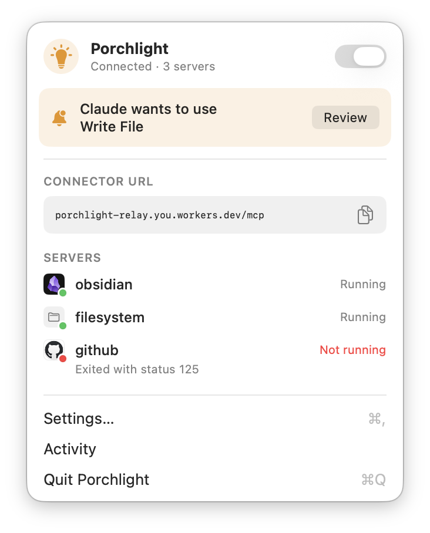
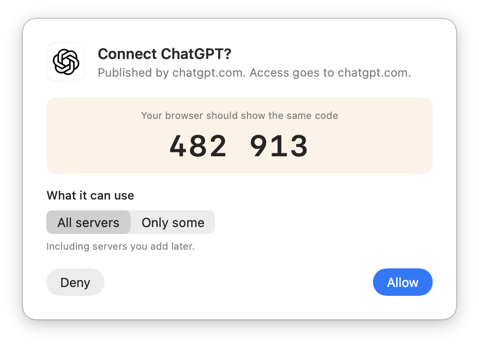
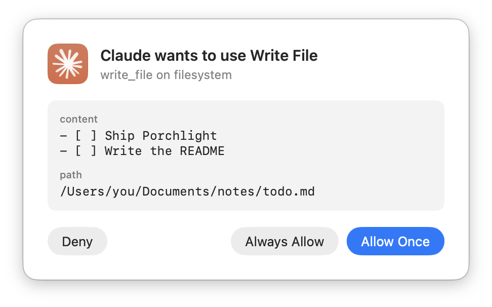
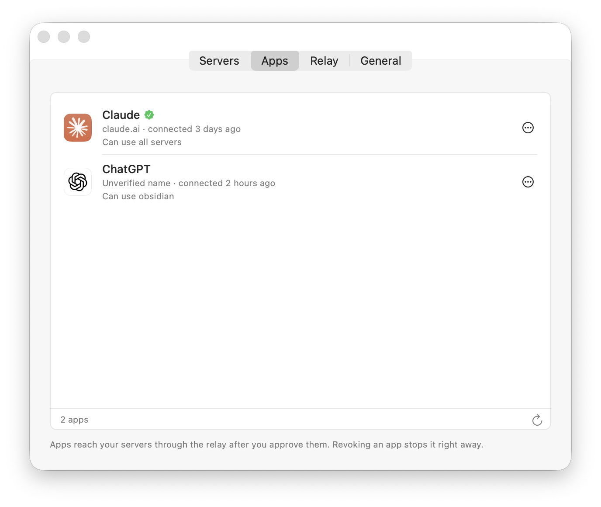
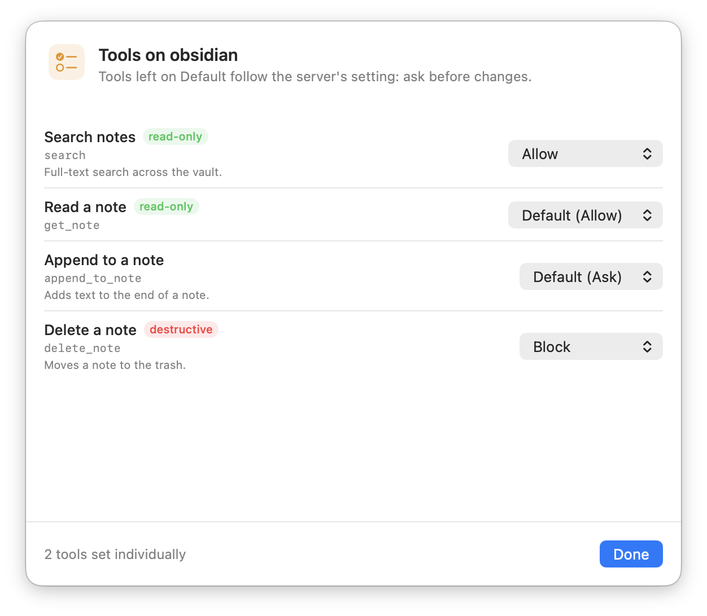
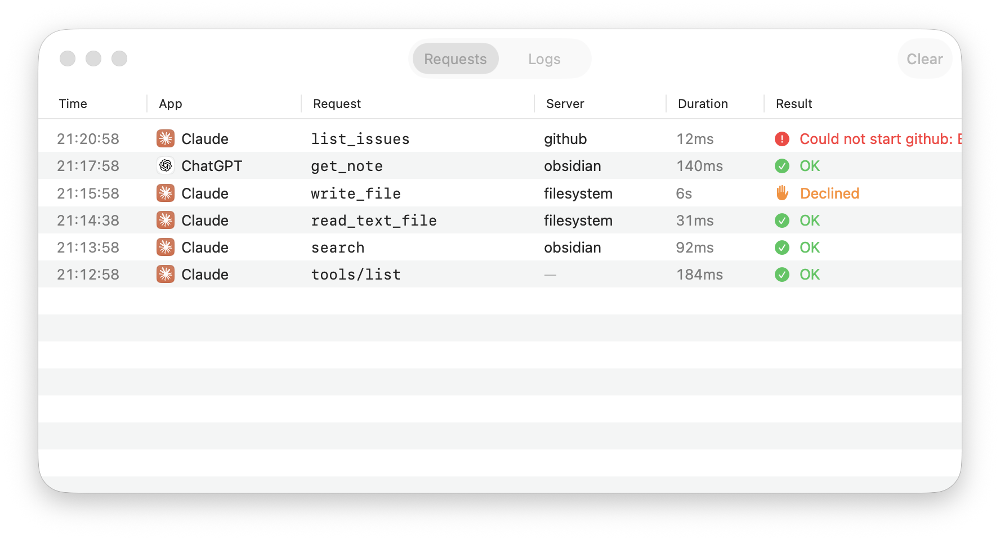

Porchlight lets Claude, ChatGPT and other cloud AI apps use the MCP servers on your Mac. Through a relay you own, with every app and every risky tool call approved by you.
macOS 14 or later · MIT license · Relay runs on Cloudflare's free plan


The most useful MCP servers run on your own computer: your notes, your files, your repos. Claude.ai and ChatGPT run in the cloud, and they can only reach servers on the public internet.
ngrok-style tunnels change URL every run, expose raw ports and don't speak MCP's OAuth, so connectors keep breaking.
Whoever has the URL gets every tool, with no record of who called what.
One permanent URL, in front of all your servers, that only answers to apps you've let in.
Porchlight is a menu bar app on your Mac plus a tiny relay that it deploys to your own Cloudflare account. Your Mac dials out to the relay, so nothing on your network has to be opened up.
Paste a Cloudflare API token and Porchlight sets up the relay for you, on the free plan, at a URL that never changes.
Import the servers you already use in Claude Desktop, Claude Code or Cursor, or add any command or local URL, like Obsidian's.
Add one URL as a custom connector in Claude or ChatGPT. Your browser shows a code, your Mac shows the same code. Click Allow.
A cloud model driving tools on your Mac deserves a doorman. Porchlight asks before anything sensitive happens, and remembers what you decide.
Tools that can change things ask first, showing exactly what the app wants to do. Allow once, always allow, or deny.

Give Claude everything and ChatGPT only your notes. Apps never see servers you leave out, and you can revoke them in a click.

Read-only tools run right away. Everything else asks, unless you say otherwise: set any tool to Allow, Ask or Block. Blocked tools disappear entirely.

Every request, from every app, with the tool, server, time taken and result, including the ones you declined. Server logs are one tab away.

All servers behind /mcp, or one per server at /mcp/name.
Commands like npx and uvx, or servers already listening, like Obsidian's.
Restarts crashed servers and reconnects after sleep or a network change.
A native Mac app. Real logos for your apps and servers, light and dark.
There's no Porchlight service in the middle. The relay runs in your own Cloudflare account, and the code is open for anyone to read.
Apps sign in with OAuth 2.1 (PKCE, short-lived tokens). Each new app also needs your approval, with a code that must match on your browser and your Mac.
Your Mac makes one outbound connection to your relay. Nothing on your network listens to the internet.
The relay passes requests through to your Mac. It keeps only sign-in records; your files, notes and tool results aren't stored there.
Signed downloads are on the way. Until then, Porchlight builds in a minute with Xcode.
# Get the code git clone https://github.com/strazan/porchlight cd porchlight # Build and open the menu bar app make app # Then: Settings → Relay → Deploy to Cloudflare…
Yes: your servers run on your Mac, so cloud apps can only use them while it's awake and Porchlight is on. Porchlight can keep your Mac from idle-sleeping while it's serving, and reconnects on its own after sleep or a network change.
Nothing. Porchlight is free and open source (MIT), and the relay fits in Cloudflare's free plan: it sleeps when idle and wakes for requests.
Any MCP client that connects to remote servers with OAuth: Claude (web, desktop and mobile), ChatGPT, and others. Porchlight speaks standard MCP over Streamable HTTP.
Any MCP server you'd run locally: commands like npx or uvx servers, and HTTP servers already running on your Mac, like Obsidian's. Porchlight can import the ones configured in Claude Desktop, Claude Code and Cursor.
No. The relay gets a free workers.dev address. You can use your own domain if you like.
No. Every app has to sign in, and signing in needs your approval on your Mac, with a matching code. You can see and revoke every approved app, and limit what each one sees.
For now, the one-click setup deploys to Cloudflare. The relay protocol is small and documented, and a self-hosted relay is on the roadmap.
Your Mac's MCP servers, ready for every AI app you use.